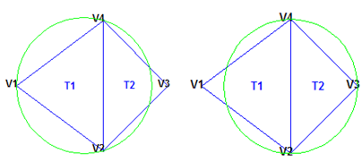
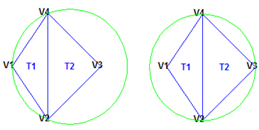
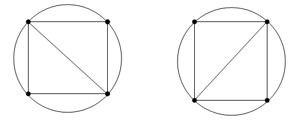

Working with Delaunay Triangulations
Definition of Delaunay Triangulation
Delaunay triangulations are widely used in scientific computing in many diverse applications. While there are numerous algorithms for computing triangulations, it is the favorable geometric properties of the Delaunay triangulation that make it so useful.
The fundamental property is the Delaunay criterion. In the case
of 2-D triangulations, this is often called the empty circumcircle
criterion. For a set of points in 2-D, a Delaunay triangulation of
these points ensures the circumcircle associated with each triangle
contains no other point in its interior. This property is important.
In the illustration below, the circumcircle associated with T1 is
empty. It does not contain a point in its interior. The circumcircle
associated with T2 is empty. It does not contain
a point in its interior. This triangulation is a Delaunay triangulation.

The triangles below are different. The circumcircle associated
with T1 is not empty. It contains V3 in
its interior. The circumcircle associated with T2 is
not empty. It contains V1 in its interior. This
triangulation is not a Delaunay triangulation.

Delaunay triangles are said to be “well shaped”
because in fulfilling the empty circumcircle property, triangles with
large internal angles are selected over ones with small internal angles.
The triangles in the non-Delaunay triangulation have sharp angles
at vertices V2 and V4. If the
edge {V2, V4} were
replaced by an edge joining V1 and V3,
the minimum angle would be maximized and the triangulation would become
a Delaunay triangulation. Also, the Delaunay triangulation connects
points in a nearest-neighbor manner. These two characteristics, well-shaped
triangles and the nearest-neighbor relation, have important implications
in practice and motivate the use of Delaunay triangulations in scattered
data interpolation.
While the Delaunay property is well defined, the topology of the triangulation is not unique in the presence of degenerate point sets. In two dimensions, degeneracies arise when four or more unique points lie on the same circle. The vertices of a square, for example, have a nonunique Delaunay triangulation.

The properties of Delaunay triangulations extend to higher dimensions. The triangulation of a 3-D set of points is composed of tetrahedra. The next illustration shows a simple 3-D Delaunay triangulation made up of two tetrahedra. The circumsphere of one tetrahedron is shown to highlight the empty circumsphere criterion.

A 3-D Delaunay triangulation produces tetrahedra that satisfy the empty circumsphere criterion.
Creating Delaunay Triangulations
MATLAB® provides two ways to create Delaunay triangulations:
The functions
delaunayanddelaunaynThe
delaunayTriangulationclass
The delaunay function supports the creation
of 2-D and 3-D Delaunay triangulations. The delaunayn function
supports creating Delaunay triangulations in 4-D and higher.
Tip
Creating Delaunay triangulations in dimensions higher than 6-D is generally not practical for moderate to large point sets due to the exponential growth in required memory.
The delaunayTriangulation class
supports creating Delaunay triangulations in 2-D and 3-D. It provides
many methods that are useful for developing triangulation-based algorithms.
These class methods are like functions, but they are restricted to
work with triangulations created using delaunayTriangulation. The delaunayTriangulation class
also supports the creation of related constructs such as the convex
hull and Voronoi diagram. It also supports the creation of constrained
Delaunay triangulations.
In summary:
The
delaunayfunction is useful when you only require the basic triangulation data, and that data is sufficiently complete for your application.The
delaunayTriangulationclass offers more functionality for developing triangulation-based applications. It is useful when you require the triangulation and you want to perform any of these operations:Search the triangulation for triangles or tetrahedra enclosing a query point.
Use the triangulation to perform a nearest-neighbor point search.
Query the triangulation's topological adjacency or geometric properties.
Modify the triangulation to insert or remove points.
Constrain edges in the triangulation—this is called a constrained Delaunay triangulation.
Triangulate a polygon and optionally remove the triangles that are outside of the domain.
Use the Delaunay triangulation to compute the convex hull or Voronoi diagram.
Using the delaunay and delaunayn functions
The delaunay and delaunayn functions take a set of points
and produce a triangulation in matrix format. Refer to Triangulation Matrix Format for more
information on this data structure. In 2-D, the delaunay function is often used to produce
a triangulation that can be used to plot a surface defined in terms
of a set of scattered data points. In this application, it’s
important to note that this approach can only be used if the surface
is single-valued. For example, it could not be used to plot a spherical
surface because there are two z values corresponding
to a single (x, y) coordinate.
A simple example demonstrates how the delaunay function
can be used to plot a surface representing a sampled data set.
MATLAB provides the delaunayn function to support the creation
of Delaunay triangulations in dimension 4-D and higher. Two complementary functions
tsearchn and dsearchn are also provided to support spatial searching for N-D
triangulations. See Spatial Searching for more information on
triangulation-based search.
Create 2-D Delaunay Triangulation
This example shows how to use the delaunay function to create a 2-D Delaunay triangulation from the seamount data set. A seamount is an underwater mountain. The data set consists of a set of longitude (x) and latitude (y) locations, and corresponding seamount elevations (z) measured at those coordinates.
Load the seamount data set and view the (x, y) data as a scatter plot.
load seamount plot(x,y,".",MarkerSize=12) xlabel("Longitude") ylabel("Latitude") grid on

Construct a Delaunay triangulation from this point set and use triplot to plot the triangulation in the existing figure.
tri = delaunay(x,y); hold on triplot(tri,x,y) hold off

Add the depth data (z) from seamount to lift the vertices and create the surface. Create a new figure and use trimesh to plot the surface in wireframe mode.
figure hidden on trimesh(tri,x,y,z) xlabel("Longitude") ylabel("Latitude") zlabel("Depth in Feet")

If you want to plot the surface in shaded mode, use trisurf instead of trimesh.
A 3-D Delaunay triangulation also can be created using the delaunay function. This triangulation is composed of tetrahedra.
Create 3-D Delaunay Triangulation
This example shows how to create a 3-D Delaunay triangulation of a random data set. The triangulation is plotted using tetramesh, and the FaceAlpha option adds transparency to the plot.
rng('default') X = rand([30 3]); tet = delaunay(X); faceColor = [0.6875 0.8750 0.8984]; tetramesh(tet,X,'FaceColor',faceColor,'FaceAlpha',0.3)

Using the delaunayTriangulation Class
The delaunayTriangulation class
provides another way to create Delaunay triangulations in MATLAB.
While delaunay and delaunayTriangulation use the
same underlying algorithm and produce the same triangulation, delaunayTriangulation provides
complementary methods that are useful for developing Delaunay-based
algorithms. These methods are like functions that are packaged together
with the triangulation data into a container called a class. Keeping
everything together in a class provides a more organized setup that
improves ease of use. It also improves the performance of triangulation-based
searches such as point-location and nearest-neighbor. delaunayTriangulation supports
incremental editing of the Delaunay triangulation. You also can impose
edge constraints in 2-D.
Triangulation Representations introduces
the triangulation class,
which supports topological and geometric queries for 2-D and 3-D triangulations.
A delaunayTriangulation is
a special kind of triangulation.
This means you can perform any triangulation query
on a delaunayTriangulation in
addition to the Delaunay-specific queries. In more formal MATLAB language
terms, delaunayTriangulation is
a subclass of triangulation.
Create, Query, and Edit Delaunay Triangulation
This example shows how to create, query, and edit a Delaunay triangulation from the seamount data using delaunayTriangulation. The seamount data set contains (x, y) locations and corresponding elevations (z) that define the surface of the seamount.
Load and triangulate the (x, y) data.
load seamount
DT = delaunayTriangulation(x,y)DT =
delaunayTriangulation with properties:
Points: [294×2 double]
ConnectivityList: [566×3 double]
Constraints: []
The Constraints property is empty because there aren't any imposed edge constraints. The Points property represents the coordinates of the vertices, and the ConnectivityList property represents the triangles. Together, these two properties define the matrix data for the triangulation.
The delaunayTriangulation class is a wrapper around the matrix data, and it offers a set of complementary methods. You access the properties in a delaunayTriangulation in the same way you access the fields of a struct.
Access the vertex data.
DT.Points;
Access the connectivity data.
DT.ConnectivityList;
Access the first triangle in the ConnectivityList property.
DT.ConnectivityList(1,:)
ans = 1×3
230 205 152
delaunayTriangulation provides an easy way to index into the ConnectivityList property matrix.
Access the first triangle.
DT(1,:)
ans = 1×3
230 205 152
Examine the first vertex of the first triangle.
DT(1,1)
ans = 230
Examine all the triangles in the triangulation.
DT(:,:);
Indexing into the delaunayTriangulation output, DT, works like indexing into the triangulation array output from delaunay. The difference between the two are the extra methods that you can call on DT (for example, nearestNeighbor and pointLocation).
Use triplot to plot the delaunayTriangulation. The triplot function is not a delaunayTriangulation method, but it accepts and can plot a delaunayTriangulation.
triplot(DT) axis equal xlabel("Longitude") ylabel("Latitude") grid on

Alternatively, you could use triplot(DT(:,:), DT.Points(:,1), DT.Points(:,2)); to get the same plot.
Use the delaunayTriangulation method, convexHull, to compute the convex hull and add it to the plot. Since you already have a Delaunay triangulation, this method allows you to derive the convex hull more efficiently than a full computation using convhull.
hold on k = convexHull(DT); xHull = DT.Points(k,1); yHull = DT.Points(k,2); plot(xHull,yHull,"r",LineWidth=2) hold off

You can incrementally edit the delaunayTriangulation to add or remove points. If you need to add points to an existing triangulation, then an incremental addition is faster than a complete retriangulation of the augmented point set. Incremental removal of points is more efficient when the number of points to be removed is small relative to the existing number of points.
Edit the triangulation to remove the points on the convex hull from the previous computation.
figure plot(xHull,yHull,"r",LineWidth=2) axis equal xlabel("Longitude") ylabel("Latitude") grid on % The convex hull topology duplicates the start and end vertex. % Remove the duplicate entry. k(end) = []; % Now remove the points on the convex hull. DT.Points(k,:) = []
DT =
delaunayTriangulation with properties:
Points: [274×2 double]
ConnectivityList: [528×3 double]
Constraints: []
% Plot the new triangulation. hold on triplot(DT) hold off

There is one vertex that is just inside the boundary of the convex hull that was not removed. The fact that it is interior to the hull can be seen using the Zoom-In tool in the figure. You could plot the vertex labels to determine the index of this vertex and remove it from the triangulation. Alternatively, you can use the nearestNeighbor method to identify the index more readily.
The point is close to location (211.6, -48.15). Use the nearestNeighbor method to find the nearest vertex.
vertexId = nearestNeighbor(DT,211.6,-48.15)
vertexId = 50
Now remove that vertex from the triangulation.
DT.Points(vertexId,:) = []
DT =
delaunayTriangulation with properties:
Points: [273×2 double]
ConnectivityList: [525×3 double]
Constraints: []
Plot the new triangulation.
figure plot(xHull,yHull,"r",LineWidth=2) axis equal xlabel("Longitude") ylabel("Latitude") grid on hold on triplot(DT) hold off

Add points to the existing triangulation. Add 4 points to form a rectangle around the triangulation.
Padditional = [210.9 -48.5; 211.6 -48.5; ...
211.6 -47.9; 210.9 -47.9];
DT.Points(end+(1:4),:) = PadditionalDT =
delaunayTriangulation with properties:
Points: [277×2 double]
ConnectivityList: [548×3 double]
Constraints: []
Close all existing figures.
close allPlot the new triangulation.
figure plot(xHull,yHull,"r",LineWidth=2) axis equal xlabel("Longitude") ylabel("Latitude") grid on hold on triplot(DT) hold off

You can edit the points in the triangulation to move them to a new location. Edit the first of the additional point set (the vertex ID 274).
DT.Points(274,:) = [211 -48.4];
Close all existing figures.
close allPlot the new triangulation
figure plot(xHull,yHull,"r",LineWidth=2) axis equal xlabel("Longitude") ylabel("Latitude") grid on hold on triplot(DT) hold off

Use the a method of the triangulation class, vertexAttachments, to find the attached triangles. Since the number of triangles attached to a vertex is variable, the method returns the attached triangle IDs in a cell array. You need braces to extract the contents.
attTris = vertexAttachments(DT,274); hold on triplot(DT(attTris{:},:),DT.Points(:,1),DT.Points(:,2),'g') hold off

delaunayTriangulation also can be used to triangulate points in 3-D space. The resulting triangulation is composed of tetrahedra.
Create and Plot Delaunay Triangulation of 3-D Points
This example shows how to use a delaunayTriangulation to create and plot the triangulation of 3-D points.
rng("default")
P = rand(30,3);
DT = delaunayTriangulation(P)DT =
delaunayTriangulation with properties:
Points: [30×3 double]
ConnectivityList: [102×4 double]
Constraints: []
faceColor = [0.6875 0.8750 0.8984]; tetramesh(DT,FaceColor=faceColor,FaceAlpha=0.3)

The tetramesh function plots both the internal and external faces of the triangulation. For large 3-D triangulations, plotting the internal faces might be an unnecessary use of resources. A plot of the boundary might be more appropriate. You can use the freeBoundary method to get the boundary triangulation in matrix format. Then pass the result to trimesh or trisurf.
Constrained Delaunay Triangulation
The delaunayTriangulation class
allows you to constrain edges in a 2-D triangulation. This means you
can choose a pair of points in the triangulation and constrain an
edge to join those points. You can picture this as “forcing”
an edge between one or more pairs of points. The following example
shows how edge constraints can affect the triangulation.
The triangulation below is a Delaunay triangulation because it respects the empty circumcircle criterion.
Constrained Delaunay Triangulation
Triangulate a set of points with an edge constraint specified between vertex V1 and V3.
Define the point set.
P = [2 4; 6 1; 9 4; 6 7];
Define a constraint, C, between V1 and V3.
C = [1 3]; DT = delaunayTriangulation(P,C);
Plot the triangulation and add annotations.
triplot(DT) % Label the vertices. hold on numvx = size(P,1); vxlabels = arrayfun(@(n) {sprintf("V%d", n)},(1:numvx)'); Hpl = text(P(:,1)+0.2, P(:,2)+0.2, vxlabels, FontWeight="bold", ... HorizontalAlignment="center", BackgroundColor="none"); hold off % Use the incenters to find the positions for placing triangle labels on the plot. hold on IC = incenter(DT); numtri = size(DT,1); trilabels = arrayfun(@(P) {sprintf('T%d', P)},(1:numtri)'); Htl = text(IC(:,1),IC(:,2),trilabels,FontWeight="bold", ... HorizontalAlignment="center",Color="blue"); hold off % Plot the circumcircle associated with the triangle, T1. hold on [CC,r] = circumcenter(DT); theta = 0:pi/50:2*pi; xunit = r(1)*cos(theta) + CC(1,1); yunit = r(1)*sin(theta) + CC(1,2); plot(xunit,yunit,"g") axis equal hold off

The constraint between vertices (V1, V3) was honored, however, the Delaunay criterion was invalidated. This also invalidates the nearest-neighbor relation that is inherent in a Delaunay triangulation. This means the nearestNeighbor search method provided by delaunayTriangulation cannot be supported if the triangulation has constraints.
In typical applications, the triangulation might be composed of many points, and a relatively small number of edges in the triangulation might be constrained. Such a triangulation is said to be locally non-Delaunay, because many triangles in the triangulation might respect the Delaunay criterion, but locally there might be some triangles that do not. In many applications, local relaxation of the empty circumcircle property is not a concern.
Constrained triangulations are generally used to triangulate a nonconvex polygon. The constraints give us a correspondence between the polygon edges and the triangulation edges. This relationship enables you to extract a triangulation that represents the region. The following example shows how to use a constrained delaunayTriangulation to triangulate a nonconvex polygon.
Define and plot a polygon.
figure() axis([-1 17 -1 6]); axis equal P = [0 0; 16 0; 16 2; 2 2; 2 3; 8 3; 8 5; 0 5]; patch(P(:,1),P(:,2),'-r',LineWidth=2,FaceColor="none",EdgeColor="r"); % Label the points. hold on numvx = size(P,1); vxlabels = arrayfun(@(n) {sprintf("P%d", n)},(1:numvx)'); Hpl = text(P(:,1)+0.2, P(:,2)+0.2, vxlabels,FontWeight="bold", ... HorizontalAlignment="center",BackgroundColor="none"); hold off

Create and plot the triangulation together with the polygon boundary.
figure() subplot(2,1,1); axis([-1 17 -1 6]); axis equal P = [0 0; 16 0; 16 2; 2 2; 2 3; 8 3; 8 5; 0 5]; DT = delaunayTriangulation(P); triplot(DT) hold on patch(P(:,1),P(:,2),'-r',LineWidth=2,FaceColor="none",EdgeColor="r"); hold off % Plot the standalone triangulation in a subplot. subplot(2,1,2); axis([-1 17 -1 6]); axis equal triplot(DT)

This triangulation cannot be used to represent the domain of the polygon because some triangles cut across the boundary. You need to impose a constraint on the edges that are cut by triangulation edges. Since all edges have to be respected, you need to constrain all edges. The steps below show how to constrain all the edges.
Enter the constrained edge definition. Observe from the annotated figure where you need constraints (between (V1, V2), (V2, V3), and so on).
C = [1 2; 2 3; 3 4; 4 5; 5 6; 6 7; 7 8; 8 1];
In general, if you have N points in a sequence that define a polygonal boundary, the constraints can be expressed as C = [(1:(N-1))' (2:N)'; N 1];.
Specify the constraints when you create the delaunayTriangulation.
DT = delaunayTriangulation(P,C);
Alternatively, you can impose constraints on an existing triangulation by setting the Constraints property: DT.Constraints = C;.
Plot the triangulation and polygon.
figure(Color="white") subplot(2,1,1); axis([-1 17 -1 6]); axis equal triplot(DT) hold on patch(P(:,1),P(:,2),'-r',LineWidth=2,FaceColor="none",EdgeColor="r"); hold off % Plot the standalone triangulation in a subplot. subplot(2,1,2); axis([-1 17 -1 6]); axis equal triplot(DT)

The plot shows that the edges of the triangulation respect the boundary of the polygon. However, the triangulation fills the concavities. What is needed is a triangulation that represents the polygonal domain. You can extract the triangles within the polygon using the delaunayTriangulation method, isInterior. This method returns a logical array whose true and false values that indicate whether the triangles are inside a bounded geometric domain. The analysis is based on the Jordan Curve theorem, and the boundaries are defined by the edge constraints. The ith triangle in the triangulation is considered to be inside the domain if the ith logical flag is true, otherwise it is outside.
Now use the isInterior method to compute and plot the set of domain triangles.
% Plot the constrained edges in red. figure(Color="white") subplot(2,1,1); plot(P(C'),P(C'+size(P,1)),"-r",LineWidth=2); axis([-1 17 -1 6]); % Compute the in/out status. IO = isInterior(DT); subplot(2,1,2); hold on axis([-1 17 -1 6]); % Use triplot to plot the triangles that are inside. % Uses logical indexing and dt(i,j) shorthand % format to access the triangulation. triplot(DT(IO, :),DT.Points(:,1),DT.Points(:,2),LineWidth=2) hold off

Triangulation of Point Sets Containing Duplicate Locations
The Delaunay algorithms in MATLAB construct a triangulation
from a unique set of points. If the points passed to the triangulation
function, or class, are not unique, the duplicate locations are detected
and the duplicate point is ignored. This produces a triangulation
that does not reference some points in the original input, namely
the duplicate points. When you work with the delaunay and delaunayn functions, the presence of
duplicates may be of little consequence. However, since many of the
queries provided by the delaunayTriangulation class are index based,
it is important to understand that delaunayTriangulation triangulates
and works with the unique data set. Therefore, indexing based on the
unique point set is the convention. This data is maintained by the Points property
of delaunayTriangulation.
The following example illustrates the importance of referencing the unique data set stored
within the Points property when working with
delaunayTriangulation:
rng('default')
P = rand([25 2]);
P(18,:) = P(8,:)
P(16,:) = P(6,:)
P(12,:) = P(2,:)
DT = delaunayTriangulation(P)
Points property shows that the
duplicate points have been removed from the
data.DT =
delaunayTriangulation with properties:
Points: [22x2 double]
ConnectivityList: [31x3 double]
Constraints: []DT.Points. Therefore, use the following code to compute and plot the
convex
hull:K = DT.convexHull(); plot(DT.Points(:,1),DT.Points(:,2),'.'); hold on plot(DT.Points(K,1),DT.Points(K,2),'-r');
delaunayTriangulation, then the result would be incorrect. The
delaunayTriangulation works with indices that are based on the unique
data set DT.Points. For example, the following would produce an incorrect
plot, because K is indexed with respect to DT.Points
and not
P:K = DT.convexHull(); plot(P(:,1),P(:,2),'.'); hold on plot(P(K,1),P(K,2),'-r');
delaunayTriangulation. Doing this eliminates the potential for
confusion. This can be accomplished using the unique function as follows:
rng('default') P = rand([25 2]); P(18,:) = P(8,:) P(16,:) = P(6,:) P(12,:) = P(2,:) [~, I, ~] = unique(P,'first','rows'); I = sort(I); P = P(I,:); DT = delaunayTriangulation(P) % The point set is unique